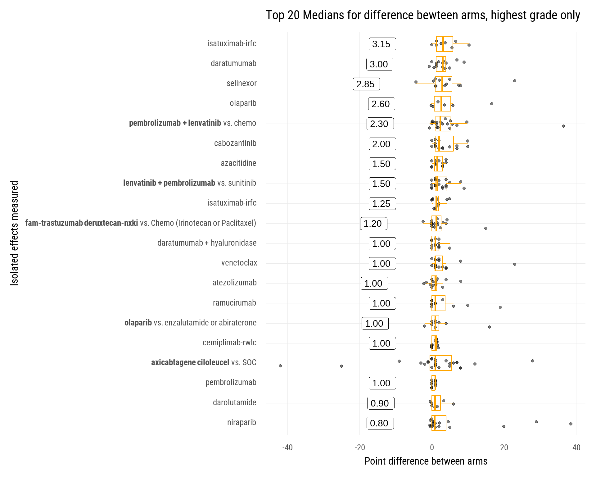

Oncology Adverse Events
Safety
All Adverse Events
This section has all adverse events listed in the study, including all levels of stratification.
|- Difference
% pts reporting adverse events, control arms vs. experimental. Dividing line is a 1:1 line
|- Relationship
This is the same but added a linear regression (green line)
Full linear model:
Call:
lm(formula = Experimental ~ Control, data = .)
Residuals:
Min 1Q Median 3Q Max
-0.58496 -0.03986 -0.02452 0.02563 0.82485
Coefficients:
Estimate Std. Error t value Pr(>|t|)
(Intercept) 0.039860 0.002267 17.58 <2e-16 ***
Control 0.936767 0.013922 67.29 <2e-16 ***
---
Signif. codes: 0 '***' 0.001 '**' 0.01 '*' 0.05 '.' 0.1 ' ' 1
Residual standard error: 0.09295 on 2625 degrees of freedom
(7 observations deleted due to missingness)
Multiple R-squared: 0.633, Adjusted R-squared: 0.6328
F-statistic: 4527 on 1 and 2625 DF, p-value: < 2.2e-16|- Placebo vs. Active Control
Compares placebo vs. active controls

Full models
$`Active-control`
Call:
lm(formula = Experimental ~ Control, data = .)
Residuals:
Min 1Q Median 3Q Max
-0.52394 -0.04023 -0.02825 0.02726 0.82682
Coefficients:
Estimate Std. Error t value Pr(>|t|)
(Intercept) 0.040226 0.003376 11.92 <2e-16 ***
Control 0.850294 0.019503 43.60 <2e-16 ***
---
Signif. codes: 0 '***' 0.001 '**' 0.01 '*' 0.05 '.' 0.1 ' ' 1
Residual standard error: 0.1024 on 1451 degrees of freedom
(7 observations deleted due to missingness)
Multiple R-squared: 0.5671, Adjusted R-squared: 0.5668
F-statistic: 1901 on 1 and 1451 DF, p-value: < 2.2e-16
$`Placebo-control`
Call:
lm(formula = Experimental ~ Control, data = .)
Residuals:
Min 1Q Median 3Q Max
-0.22935 -0.03695 -0.02495 0.01589 0.70493
Coefficients:
Estimate Std. Error t value Pr(>|t|)
(Intercept) 0.036949 0.002732 13.53 <2e-16 ***
Control 1.090215 0.018303 59.56 <2e-16 ***
---
Signif. codes: 0 '***' 0.001 '**' 0.01 '*' 0.05 '.' 0.1 ' ' 1
Residual standard error: 0.07509 on 1172 degrees of freedom
Multiple R-squared: 0.7517, Adjusted R-squared: 0.7515
F-statistic: 3548 on 1 and 1172 DF, p-value: < 2.2e-16Highest Grade Events
This sectionis only the highest stratification level listed for adverse events.
|- Difference
Same as above but just for the highest grade reported for each adverse event.
|- Relationship
This is the same but added a linear regression (green line)

Full linear model:
Call:
lm(formula = Experimental ~ Control, data = .)
Residuals:
Min 1Q Median 3Q Max
-0.39837 -0.00988 -0.00688 0.00295 0.39178
Coefficients:
Estimate Std. Error t value Pr(>|t|)
(Intercept) 0.009877 0.001175 8.403 <2e-16 ***
Control 0.944725 0.020682 45.679 <2e-16 ***
---
Signif. codes: 0 '***' 0.001 '**' 0.01 '*' 0.05 '.' 0.1 ' ' 1
Residual standard error: 0.03961 on 1311 degrees of freedom
(6 observations deleted due to missingness)
Multiple R-squared: 0.6141, Adjusted R-squared: 0.6138
F-statistic: 2087 on 1 and 1311 DF, p-value: < 2.2e-16|- Placebo vs. Active Control
Compares placebo vs. active controls

Full models
$`Active-control`
Call:
lm(formula = Experimental ~ Control, data = .)
Residuals:
Min 1Q Median 3Q Max
-0.37142 -0.01027 -0.00658 0.00342 0.39539
Coefficients:
Estimate Std. Error t value Pr(>|t|)
(Intercept) 0.007568 0.001732 4.371 1.42e-05 ***
Control 0.901503 0.024568 36.694 < 2e-16 ***
---
Signif. codes: 0 '***' 0.001 '**' 0.01 '*' 0.05 '.' 0.1 ' ' 1
Residual standard error: 0.04356 on 723 degrees of freedom
(6 observations deleted due to missingness)
Multiple R-squared: 0.6506, Adjusted R-squared: 0.6501
F-statistic: 1346 on 1 and 723 DF, p-value: < 2.2e-16
$`Placebo-control`
Call:
lm(formula = Experimental ~ Control, data = .)
Residuals:
Min 1Q Median 3Q Max
-0.07698 -0.01014 -0.00601 0.00099 0.37593
Coefficients:
Estimate Std. Error t value Pr(>|t|)
(Intercept) 0.009010 0.001512 5.96 4.36e-09 ***
Control 1.266288 0.045831 27.63 < 2e-16 ***
---
Signif. codes: 0 '***' 0.001 '**' 0.01 '*' 0.05 '.' 0.1 ' ' 1
Residual standard error: 0.03223 on 586 degrees of freedom
Multiple R-squared: 0.5657, Adjusted R-squared: 0.565
F-statistic: 763.4 on 1 and 586 DF, p-value: < 2.2e-16Body system
This is incomplete, I still have to code some of the adverse events
This is boxplot of the intervential drug adverse events by body system.
‘n’ = the number of trials included in the trial
Trial analysis
Drugs are the drugs measured in trial design. Bolded is the intervention arm. If not bolded, it was compared against placebo or same regime without the intervention drug
Distribution
This is the adverse events mapped as distributions. Only evaluated for highest grades reported. Only show trials with significant difference (p-value < 0.05) between the experimental and control arms (otherwise the distrubution would be the same).
Distribution of adverse events, highest grade
Summary Difference between arms
This looks at the point difference between the arms.
This is the same as above but with added visual of median differences. Overall median difference is 0.7 points.


Positive point difference means intervention arm has more adverse events reported
Discountination
Fatal
Efficacy
Overall Survival
All OS reported/found rrrespective of primary endpoint. Not novel but interesting to see which trials used OS as primary endpoint